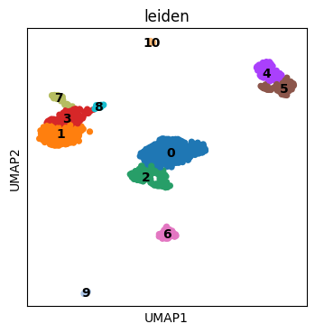
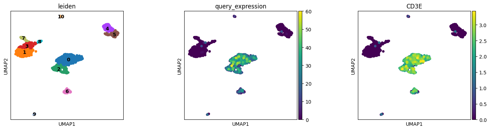

Sequence Search with Malva¶
This notebook demonstrates how to query arbitrary nucleotide sequences against a Malva index and visualize the results at single-cell resolution.
We will:
Load the clustered PBMC data from the previous step
Query a CD3E transcript isoform sequence against the index
Project query results onto the UMAP and compare with gene-level quantification
Prerequisites: Run 1_run_malva.sh and 2_simple_analysis.ipynb first.
Load clustered data¶
[31]:
import scanpy as sc
import matplotlib.pyplot as plt
import pandas as pd
import numpy as np
import dnaio
from malva.malva_index import MalvaIndex
[ ]:
# Load the clustered h5ad from the previous notebook
adata = sc.read_h5ad("quant/pbmc_1k_v3/pseudoquant_clustered.h5ad")
[ ]:
# Quick look at the clusters
plt.rcParams["figure.figsize"] = (4, 4)
sc.pl.umap(adata, color=["leiden"], wspace=0.4, ncols=3, legend_loc = "on data")

Load the Malva index¶
[ ]:
# Open the index we built in step 1
mindex = MalvaIndex("indices/pbmc_1k_v3")
Query a custom sequence¶
We query sequence.fa, which contains one isoform of the CD3E gene.
This demonstrates how you can search for any sequence of interest: transcript isoforms, viral sequences, circular RNAs, etc.
[ ]:
# Load the query sequence from FASTA file
query = []
with dnaio.open("sequence.fa") as fasta:
for record in fasta:
query.append([record.sequence])
[ ]:
# Search the index for cells containing k-mers from the query sequence
mindex.open()
results = mindex.where(
sequence = query,
sliding_size = 64, # window size for k-mer matching
pct_threshold = 0.65, # minimum fraction of k-mers that must match
count_at_most = 100000, # upper count threshold
count_at_least = 0, # lower count threshold
)
mindex.close()
Project results onto cells¶
[ ]:
# Convert results to a dataframe and merge with cell annotations
df_results = pd.DataFrame({
"cell": results[0][0],
"expression": results[0][1]
})
df_results.index = df_results["cell"].astype(str)
[ ]:
# Add query expression to the AnnData object
adata.obs["query_expression"] = np.nan_to_num(
adata.obs.merge(df_results, left_index=True, right_index=True, how="left")["expression"].values,
nan=0
)
Compare sequence query with gene-level quantification¶
The query sequence is a CD3E isoform. We can compare our sequence-level search results with the gene-level CD3E expression from malva quant.
The sequence query results correlate with CD3E expression, as both capture T cell populations. Sequence-level queries can detect isoform-specific expression patterns not visible at the gene level.
[35]:
plt.rcParams["figure.figsize"] = (4, 4)
sc.pl.umap(adata, color=["leiden", "query_expression", "CD3E"], wspace=0.4, ncols=3, legend_loc = "on data")
